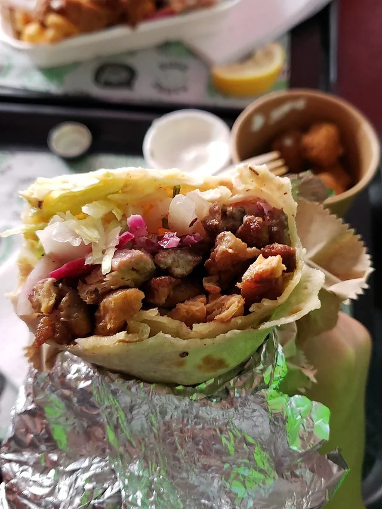
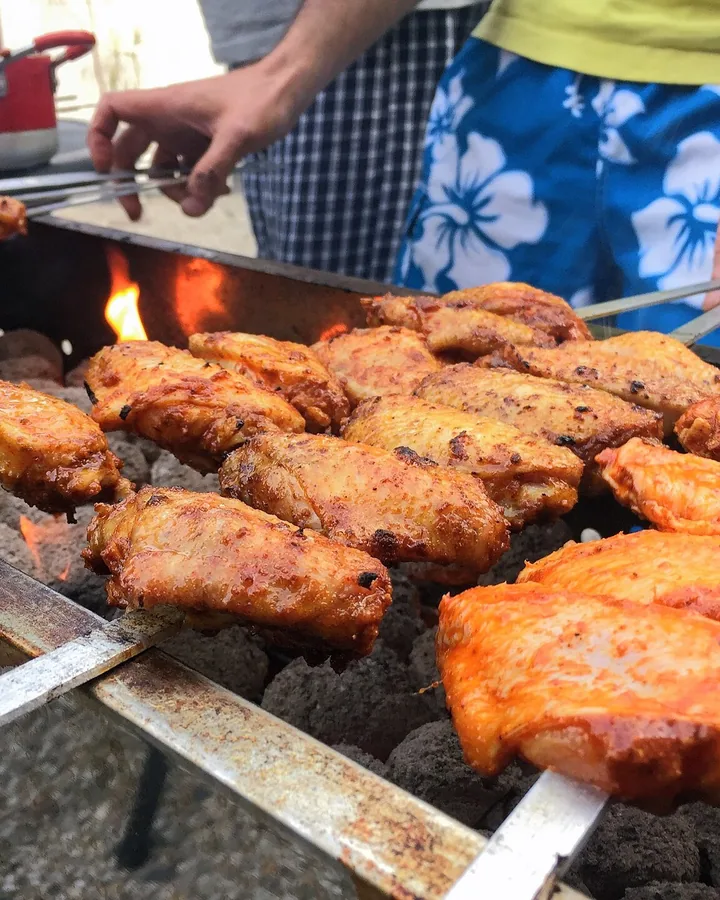
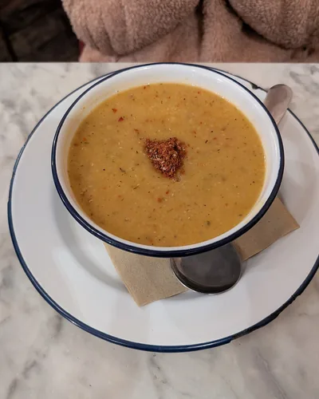
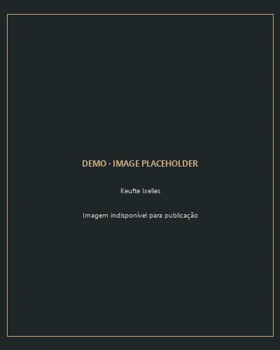

Imagem substituída por placeholder gráfico para a versão pública.
Keufté, até tarde.
Sanduíches de keufté, frango ou falafel, pratos e sopa de lentilha, na rue de la Brasserie, perto de Flagey.
Horários a confirmar

Imagem substituída por placeholder gráfico para a versão pública.
A grelha, até tarde.
Keufté, frango, berinjela, abobrinha, pimentão: grelhados, servidos no sanduíche ou no prato. Segundo a ficha do Google Maps, aberto até as 2 h, e até as 4 h na sexta e no sábado (a confirmar).
No balcão
 — ampliar a foto
— ampliar a fotoO sanduíche · crédito original omitido, set. 2026

— ampliar a fotoA sopa de lentilha · crédito original omitido, jan. 2026

— ampliar a fotoQuatro sanduíches · crédito original omitido, mar. 2025
 — ampliar a foto
— ampliar a fotoPara viagem · crédito original omitido, out. 2026
 — ampliar a foto
— ampliar a fotoO tabule · crédito original omitido, fev. 2023
 — ampliar a foto
— ampliar a fotoA fachada, de dia · crédito original omitido, out. 2026


Rue de la Brasserie
1050 Ixelles, perto da place Flagey · número a confirmar: 109 segundo o Google Maps, 111 segundo o briefing; numa foto noturna, as portas vizinhas têm os nº 113 e 107.
Horários da semana (a confirmar)
| Segunda | 11 h 30 – 2 h |
|---|---|
| Terça | 11 h 30 – 2 h |
| Quarta | 11 h 30 – 2 h |
| Quinta | 11 h 30 – 3 h |
| Sexta | 11 h 30 – 4 h |
| Sábado | 11 h 30 – 4 h |
| Domingo | 11 h 30 – 2 h |
Segundo a ficha do Google Maps, consultada em 11/11/2026; não confirmados pelo Keufté. Feriados: horários possivelmente diferentes.
Telefone publicado na ficha do Google Maps (não verificado por uma segunda fonte): +32 493 30 90 90
Rota até o Keufté →